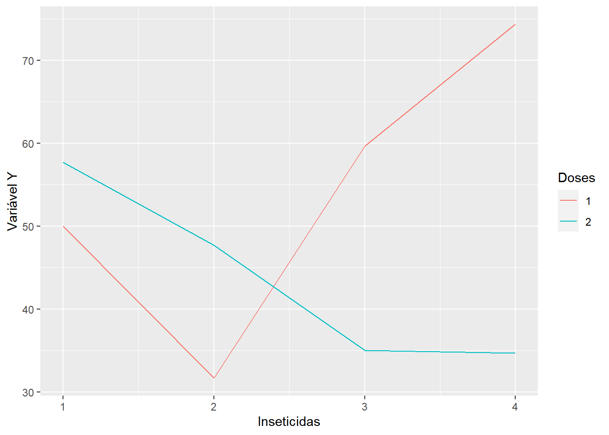
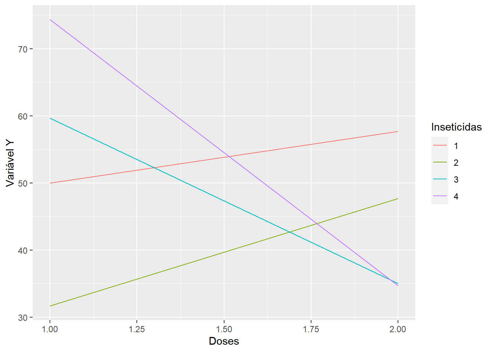

Capítulo 11 ANÁLISE DE UM EXPERIMENTO FATORIAL COM 2 FATORES, COM INTERAÇÃO SIGNIFICATIVA
Para obtenção da análise de variância, vamos supor o seguinte ensaio em que foram estudados os efeitos de 4 inseticidas em 2 doses diferentes sobre a produção da cultura do milho em kg/parcela. Dados estão disponíveis online em inseticidas.txt
| Trat | Rep.1 |Re | Rep.2 | Rep.3 | Total| |
|---|---|---|---|---|
| \(I_1D_1\)| 58| | 58| 45| | 45| 47 | 47| ** | 150| |
| \(I_1D_2\) | 61| 65| | 65| 47 | 47| ** | 173| |
| \(I_2D_1\) | 31| 35| | 35| 29 | 29| ** | 95| |
| \(I_2D_2\) | 43| 51| | 51| 49 | 49| ** | 143| |
| \(I_3D_1\) | 45| 55| | 55| 79 | 79| ** | 179| |
| \(I_3D_2\) | 31| 37| | 37| 37 | 37| ** | 105| |
| \(I_4D_1\) | 78| 83| | 83| 62 | 62| ** | 223| |
| \(I_4D_2\) | 36| 34| | 34| 34 | 34| ** | 104| |
| Total| **38 | 383| **4 | 405| **384 | 384| **117 | 1172| |
11.1 Obtenção da análise de variância
O ensaio foi montado de acordo com o delineamento inteiramente causalizado, e portanto, a análise de variância preliminar, obtida da maneira usual, foi a seguinte: \[ \begin{aligned} SQ_{Total} &= (58^2+45^2+\cdots +34^2)-\frac{1175^2}{8 \cdot 3} \\ &=5813,33 \end{aligned} \] \[ \begin{aligned} SQ_{Trat} &= \frac{1}{3} (150^2+173^2+\cdots +104^2)-\frac{1175^2}{8 \cdot 3} \\ &=46 \end{aligned} \]
\[ \begin{aligned} SQ_{Res} &= SQ_{Total} - SQ_{Trat} &=5813,33 - 4605,33 &=1208,00 \end{aligned} \]
Quadro de Análise de Variância Preliminar:
| Causas de Variação | GL| S | SQ| QM | QM| F| | F| |
|---|---|---|---|---|
| Trat. | 7 | 4605,33| 657 | 657,90| 8,71* | 8,71* |
| Res | 16| | 1208,0| 75 | 75,50 | |
| Total | 23 | 5813,13| | | | |
Conclusão: O teste é significativo ao nível de \(1\%\) de probabilidade, logo, rejeitamos a hipótese da nulidade (\(H_0\)), e concluímos que os efeitos dos tratamentos diferem entre si em relação à característica analisada, com um grau de confiança superior a \(99\%\) de probabilidade.
Devemos agora, desdobrar a soma de quadrado e os graus de liberdade de tratamentos para estudas os efeitos principais e a interação entre os fatores.
Para facilitar os cálculos, utilizamos um quadro auxiliar como o seguinte:
Quadro de totais
| (3) | \(I_1\) | \(I_2\) | \(I_3\) | \(I_4\) | Total |
|---|---|---|---|---|---|
| \(D_1\) | 150 | 95 | 179 | 223 | 647 |
| \(D_2\) | 173 | 143 | 105 | 104 | 525 |
| Total | 323 | 238 | 284 | 327 | 1172 |
Então, as somas de quadrados são obtidas da seguinte maneira:
1. Soma de quadrados devido ao efeito de Inseticidas:
\[ \begin{aligned} SQ_{Ef.Inseticida} &= \frac{1}{r_I}[T_{I_1}^2+T_{I_2}^2+T_{I_3}^2+T_{I_4}^2] - \frac{G^2}{I\cdot J} \\ &= \frac{1}{6}[323^2+238^2+284^2+327^2] - \frac{1172^2}{24} \\ &= 860,33 \end{aligned} \]
2. Soma de quadrados devido ao efeito de Doses:
\[ \begin{aligned} SQ_{Ef.Dose} &= \frac{1}{r_D}[T_{D_1}^2+T_{D_2}] - \frac{G^2}{I\cdot J} \\ &= \frac{1}{12}[647^2+525^2] - \frac{1172^2}{24} \\ &= 620,16 \end{aligned} \]
3. Soma de quadrados devido ao efeito da Interação Inseticida x Doses:
$$ \begin{aligned} SQ_{Interação;ID} &= SQ_{S,F}-SQ_{Ef.Ins.}-SQ_{Ef.Dos.} \ SQ_{I,D} &= (T_{I_1D_1}2+T_{I_1D_2}2++T_{I_4D_2}^2) - C \ &= (1502+1732++ 104^2) - \ &= 4605,33 \ assim, \
SQ_{Interação;ID} &= SQ_{S,F}-SQ_{Ef.Ins.}-SQ_{Ef.Dos.} \ &=4605,33-860,33-620,16 \ &=3124,84 \end{aligned} $$
Portanto, temos o seguinte quadro de análise de variância:
| Causas de Variação | GL | SQ | QM | F |
|---|---|---|---|---|
| Efeito de Inseticida (I) | 3 | 860,33 | 286,78 | 3,80* |
| Efeito de Doses (D) | 1 | 620,16 | 620,16 | 8,21* |
| Ef. da Interação (IxD) | 3 | 3124,84 | 1041,61 | 13,80** |
| (Tratamentos) | 7 | 4605,33 | – | – |
| Resíduos | 16 | 1208,00 | 75,50 | – |
| Total | 23 | 5813,33 | – | – |
Valores de F da tabela para Inseticida (\(3 \times 16 GL\)): \(\begin{cases}5\%=3,24 \\ 1\%=5,29 \end{cases}\)
Valores de F da tabela para Fungicida (\(1 \times 16 GL\)): \(\begin{cases}5\%=4,49 \\ 1\%=8,53 \end{cases}\)
Valores de F da tabela para Interação \(S\times F\) (\(3 \times 16 GL\)): \(\begin{cases}5\%=3,24 \\ 1\%=5,29 \end{cases}\)
Conclusões
Para efeito de Inseticida: O teste foi significativo ao nível de \(5\%\) de probabilidae, indicando que devemos rejeitar \(H_0\) e concluir que os inseticidas possuem efeitos diferentes sobre a produção da cultura do milho.
Para efeito de Dose: O teste foi significativo ao nível de \(5\%\) de probabilidae, indicando que devemos rejeitar \(H_0\) e concluir que as dosagens possuem efeitos diferentes sobre a produção da cultura do milho.
Para efeito da Interação (I \(\times\) D): O teste foi significativo ao nível de \(1\%\) de probabilidae, indicando que devemos rejeitar \(H_0\) e concluir que os inseticidas e dosagens agem conjuntamente sobre a produção da cultura do milho, ou seja, inseticidas e dosagens não agem de maneira independente.
Devemos portanto, desdobrar o efeito da interação para estudar os efeitos de cada um dos fatores dentro dos níveis do outro fator.
11.2 Desdobrando a interação \(I\times D\), para estudar os efeitos do fator DOSES em cada nível do fator INSETICIDA (D d. I):
\[ SQ_{Dd.I_1} = \frac{1}{3}(150^2+173^2) - \frac{323^2}{6}=8,16 \\ SQ_{Dd.I_2} = \frac{1}{3}(95^2+143^2) - \frac{238^2}{6}=384,00 \\ SQ_{Dd.I_3} = \frac{1}{3}(179^2+105^2) - \frac{284^2}{6}=912,66 \\ SQ_{Dd.I_4} = \frac{1}{3}(223^2+104^2) - \frac{327^2}{6}=2360,17 \]
Verificação: \(SQ_{Dd.I_1}+SQ_{Dd.I_2}+SQ_{Dd.I_3}+SQ_{Dd.I_4}=SQ_{D}+SQ_{D\times I}\)
Então, o quadro de análise de variância com desdobramento da interação \(I\times D\), estudando-se o efeito de doses dentro de cada inseticida será o seguinte:
| Causas de Variação | GL | SQ | QM | F |
|---|---|---|---|---|
| Efeito de Inseticida (I) | 3 | 860,33 | 286,78 | 3,80* |
| Doses d.I1 | 1 | 88,16 | 88,16 | 1,17 |
| Doses d.I2 | 1 | 384,00 | 384,00 | 5,09* |
| Doses d.I3 | 1 | 912,66 | 912,66 | 12,09** |
| Doses d.I4 | 1 | 2360,17 | 2360,17 | 31.26** |
| (Tratamentos) | 7 | 4605,33 | – | – |
| Resíduos | 16 | 1208,00 | 75,50 | – |
| Total | 23 | – | – | – |
Valores de F da tabela para Inseticidas (\(3 \times 16 GL\)): \(\begin{cases}5\%=3,24 \\ 1\%=5,29 \end{cases}\)
Valores de F da tabela para Doses d. Inseticidas (\(1 \times 16 GL\)): \(\begin{cases}5\%=4,49 \\ 1\%=8,53 \end{cases}\)
11.3 Desdobrando a interação \(I \times D\), para estudar os efeitos do fator INSETICIDAS dentro de cada nível do fator DOSE (D d. I):
\[ SQ_{Id.D_1} = \frac{1}{3}(150^2+95^2+179^2+223^2) - \frac{647^2}{12}=2880,92 \\ SQ_{Id.D_2} = \frac{1}{3}(173^2+143^2+105^2+104^2) - \frac{525^2}{12}=1104,25 \\ \]
Verificação: \(SQ_{Id.D_1}+SQ_{Id.D_2}=SQ_{I}+SQ_{I \times D}\)
| Causas de Variação | GL | SQ | QM | F |
|---|---|---|---|---|
| Efeito de Inseticida (I) | 1 | 620,16 | 620,16 | 8,21* |
| Inseticida d.D1 | 3 | 2880,92 | 960,31 | 12,72** |
| Inseticida d.D2 | 3 | 1104,25 | 368,08 | 4.88* |
| (Tratamentos) | 7 | 4605,33 | – | – |
| Resíduos | 16 | 1208,00 | 75,50 | – |
| Total | 23 | 5813,33 | – | – |
Valores de F da tabela para Doses (\(1 \times 16 GL\)): \(\begin{cases}5\%=4,49 \\ 1\%=8,53 \end{cases}\)
Valores de F da tabela para Inseticidas d. Doses (\(3 \times 16 GL\)): \(\begin{cases}5\%=3,24 \\ 1\%=5,29 \end{cases}\)
Para completar a análise de variância, e obter conclusões mais específicas sobre o efeito dos inseticidas em cada dosagem, podemos aplicar um teste de comparação de médias.
11.4 Teste de Tukey para a comparação de médias
Construção do Quadro de Médias a partir do Quadro de totais:
Quadro auxiliar de totais:
| \((3)\) | \(I_1\) | \(I_2\) | \(I_3\) | \(I_4\) | Total |
|---|---|---|---|---|---|
| \(D_1\) | 150/3 | 95/3 | 179/3 | 223/3 | 647/12 |
| \(D_2\) | 173/3 | 143/3 | 105/3 | 104/3 | 525/12 |
| Total | 323/6 | 238/6 | 284/6 | 327/6 | 1172/24 |
Quadro de médias:
| \(I_1\) | \(I_2\) | \(I_3\) | \(I_4\) | Média Doses | |
|---|---|---|---|---|---|
| \(D_1\) | 50,00 | 31,67 | 59,67 | 74,32 | 53,92 |
| \(D_2\) | 53,67 | 47,67 | 35,00 | 34,67 | 43,75 |
| Média Inseticidas | 53,83 | 39,67 | 47,33 | 54,5 | 48,83 |
11.5 Para comparar médias de Inseticidas na Dose 1 (I d. \(D_1\))
\[ \Delta = dms=q \cdot s(m) = q_{(4 \times 16 GL)}\cdot \sqrt{\frac{QM_{Res}}{r}}=4,05\cdot \sqrt{\frac{75,50}{3}}=20,34\;kg/parcela \]
| Inseticidas d. \(D_1\) | \(\hat{m_{I_4}}\) | \(\hat{m_{I_3}}\) | \(\hat{m_{I_1}}\) | \(\hat{m_{I_2}}\) |
|---|---|---|---|---|
| \(\hat{m_{I_4}}\) | 14,66 | 24,33* | 42,66* | |
| \(\hat{m_{I_3}}\) | – | – | 9,67 | 28,00* |
| \(\hat{m_{I_1}}\) | – | – | – | 18,37 |
11.6 Para comparar médias de Inseticidas na Dose 2 (I d. \(D_2\))
\[ \Delta = dms=q \cdot s(m) = q_{(4 \times 16 GL)}\cdot \sqrt{\frac{QM_{Res}}{r}}=4.05\cdot \sqrt{\frac{75.50}{3}}=20.34\;kg/parcela \]
| Inseticidas d. \(D_1\) | \(\hat{m_{I_1}}\) | \(\hat{m_{I_2}}\) | \(\hat{m_{I_3}}\) | \(\hat{m_{I_4}}\) |
|---|---|---|---|---|
| \(\hat{m_{I_1}}\) | 10,00 | 22,67* | 23,00* | |
| \(\hat{m_{I_2}}\) | – | – | 12,67 | 13,00 |
| \(\hat{m_{I_3}}\) | – | – | – | 0,33 |
Resultado do teste de Tukey
Médias seguidas pela mesma letra, minúsculas nas linhas e maiúsculas nas colunas, não diferem entre si pelo teste de Tukey ao nível de \(5\%\) de probabilidade.
| \(I_1\) | \(I_2\) | \(I_3\) | \(I_4\) | Média Doses | |
|---|---|---|---|---|---|
| \(D_1\) | 50,00 Abc | 31,67 Bc | 59,67 Aab | 74,32 Aa | 53,92 |
| \(D_2\) | 53,67 Aa | 47,67 Aab | 35,00 Bb | 34,67 Bb | 43,75 |
| Média Inseticidas | 53,83 | 39,67 | 47,33 | 54,5 | 48,83 |
11.7 Cálculo do coeficiente de variação do experimento
\[ CV=100\cdot \frac{\sqrt{QM_{res}}}{\hat{m}}=100\cdot \frac{8,69}{48,83}=17,80\% \]
Aplicação no R

Utilizando as funções básicas e o pacote agricolae
# Carregando o pacote para análise de variância
library(agricolae)
library(tidyverse)
# Definindo o caminho do banco de dados
caminho<-"https://raw.githubusercontent.com/arpanosso/ExpAgr_2020/master/dados/inseticidas.txt"
# Entrada da dados
dados<-read.table(caminho,h=TRUE)
#Guardando os fatores (tratamentos de solo e fungicidas) e a variável resposta (y)
ins<-as.factor(dados$Ins)
dose<-as.factor(dados$Dos)
y<-dados$Y
# Gráfico da interação
dados %>%
group_by(Ins,Dos) %>%
summarise(Y = mean(Y)) %>%
ggplot(aes(x=Ins, y=Y,col=as.factor(Dos)))+
geom_line()+
labs(x="Inseticidas",y="Variável Y",col="Doses")
dados %>%
group_by(Ins,Dos) %>%
summarise(Y = mean(Y)) %>%
ggplot(aes(x=Dos, y=Y,col=as.factor(Ins)))+
geom_line()+
labs(x="Doses",y="Variável Y",col="Inseticidas") Analise considerando o delineamento de tratamentos
## Analysis of Variance Table
##
## Response: y
## Df Sum Sq Mean Sq F value Pr(>F)
## ins 3 860.33 286.78 3.7984 0.0312885 *
## dose 1 620.17 620.17 8.2141 0.0112029 *
## ins:dose 3 3124.83 1041.61 13.7962 0.0001057 ***
## Residuals 16 1208.00 75.50
## ---
## Signif. codes: 0 '***' 0.001 '**' 0.01 '*' 0.05 '.' 0.1 ' ' 1Medias dos efeitos principais e da interação
## Tables of means
## Grand mean
##
## 48.83333
##
## ins
## ins
## 1 2 3 4
## 53.83 39.67 47.33 54.50
##
## dose
## dose
## 1 2
## 53.92 43.75
##
## ins:dose
## dose
## ins 1 2
## 1 50.00 57.67
## 2 31.67 47.67
## 3 59.67 35.00
## 4 74.33 34.67SE A INTERAÇÃO FOR SIGNIFICATIVA
Desdobramento de Doses dentro Inseticidas
# Redefinindo o modelo para o estudo das interações
modab <- aov(y~ins/dose) # Colocar os Controles locais, blocos, se for o caso
# Observe a posição dos efeitos que tem a interação fungicida:solos
effects(modab)## (Intercept) ins2 ins3 ins4 ins1:dose2 ins2:dose2
## -239.233498 -25.927249 -13.666667 1.154701 -9.389711 19.595918
## ins3:dose2 ins4:dose2
## 30.210373 48.581547 -11.765956 12.443081 7.747475 4.385556
##
## -4.544707 1.882507 5.293268 -3.123077 -9.765956 -5.556919
##
## 1.747475 2.385556 19.455293 1.882507 -15.706732 -3.123077
## attr(,"assign")
## [1] 0 1 1 1 2 2 2 2
## attr(,"class")
## [1] "coef"## ins1:dose2 ins2:dose2 ins3:dose2 ins4:dose2
## -9.389711 19.595918 30.210373 48.581547summary(modab,split=list("ins:dose"=list(In1=1, # tem fungicida 0
In2=2,
In3=3,
In4=4
))) # tem fungicida 1## Df Sum Sq Mean Sq F value Pr(>F)
## ins 3 860 286.8 3.798 0.03129 *
## ins:dose 4 3745 936.2 12.401 8.82e-05 ***
## ins:dose: In1 1 88 88.2 1.168 0.29588
## ins:dose: In2 1 384 384.0 5.086 0.03848 *
## ins:dose: In3 1 913 912.7 12.088 0.00311 **
## ins:dose: In4 1 2360 2360.2 31.260 4.06e-05 ***
## Residuals 16 1208 75.5
## ---
## Signif. codes: 0 '***' 0.001 '**' 0.01 '*' 0.05 '.' 0.1 ' ' 1Desdobramento de Fungicida dentro Tratamento de Solo
# Redefinindo o modelo para o estudo das interações
modba <- aov(y~dose/ins) # Colocar os Controles locais, blocos, se for o caso
# Observe a posição dos efeitos que tem a interação solos:fungicida
effects(modba)## (Intercept) dose2 dose1:ins2 dose2:ins2 dose1:ins3 dose2:ins3
## -239.233498 24.903146 44.500000 -7.833333 3.535534 15.792051
## dose1:ins4 dose2:ins4
## -29.802125 28.169132 -8.469342 4.432717 2.997896 4.213459
##
## -0.649806 2.164049 5.108630 -2.862805 -6.469342 -13.567283
##
## -3.002104 2.213459 23.350194 2.164049 -15.891370 -2.862805
## attr(,"assign")
## [1] 0 1 2 2 2 2 2 2
## attr(,"class")
## [1] "coef"## dose1:ins2 dose2:ins2 dose1:ins3 dose2:ins3 dose1:ins4 dose2:ins4
## 44.500000 -7.833333 3.535534 15.792051 -29.802125 28.169132## Df Sum Sq Mean Sq F value Pr(>F)
## dose 1 620 620.2 8.214 0.011203 *
## dose:ins 6 3985 664.2 8.797 0.000243 ***
## dose:ins: Dose1 3 2881 960.3 12.719 0.000166 ***
## dose:ins: Dose2 3 1104 368.1 4.875 0.013544 *
## Residuals 16 1208 75.5
## ---
## Signif. codes: 0 '***' 0.001 '**' 0.01 '*' 0.05 '.' 0.1 ' ' 1Utilizando ao pacrote ExpDes.pt, mais prático
# Carregando o pacote para análise de variância
library(ExpDes.pt)
# Definindo o caminho do banco de dados
caminho<-"https://raw.githubusercontent.com/arpanosso/ExpAgr_2020/master/dados/solofungi.txt"
# Entrada da dados
dados<-read.table(caminho,h=TRUE)
#Guardando os fatores (tratamentos de solo e fungicidas) e a variável resposta (y)
solos<-dados$S
fungicida<-dados$F
y<-dados$y
# Utilizando a função fat2.dic do pacote ExpDes.pt
fat2.dic(solos,fungicida,y,fac.names = c("Trat.Solo", "Fungicida"))## ------------------------------------------------------------------------
## Legenda:
## FATOR 1: Trat.Solo
## FATOR 2: Fungicida
## ------------------------------------------------------------------------
##
##
## Quadro da analise de variancia
## ------------------------------------------------------------------------
## GL SQ QM Fc Pr>Fc
## Trat.Solo 3 30.395 5 74.004 0.00000
## Fungicida 1 0.209 4 1.527 0.23439
## Trat.Solo*Fungicida 3 0.413 3 1.005 0.41607
## Residuo 16 2.191 2
## Total 23 33.208 1
## ------------------------------------------------------------------------
## CV = 9.42 %
##
## ------------------------------------------------------------------------
## Teste de normalidade dos residuos (Shapiro-Wilk)
## valor-p: 0.6260575
## De acordo com o teste de Shapiro-Wilk a 5% de significancia, os residuos podem ser considerados normais.
## ------------------------------------------------------------------------
##
## Interacao nao significativa: analisando os efeitos simples
## ------------------------------------------------------------------------
## Trat.Solo
## Teste de Tukey
## ------------------------------------------------------------------------
## Grupos Tratamentos Medias
## a 2 5.173333
## a 1 4.921667
## b 4 2.873333
## b 3 2.738333
## ------------------------------------------------------------------------
##
## Fungicida
## De acordo com o teste F, as medias desse fator sao estatisticamente iguais.
## ------------------------------------------------------------------------
## Niveis Medias
## 1 0 4.020000
## 2 1 3.833333
## ------------------------------------------------------------------------